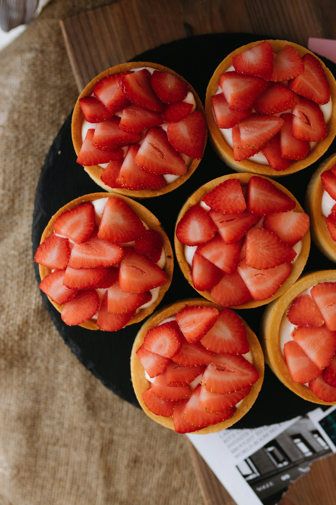

Strawberry Tart

Beautiful strawberry tarts
A strawberry tart is the perfect summer dessert. With a buttery crust, a creamy filling, and then a topping of fresh berries finished off with a fruit glaze screams the perfect dessert.
Ingredients
- Flour (preferably unbleached all purpose flour)
- Satled butter
- Sugar
- Salt
- Cream Cheese
- Sour Cream. Could substitute with Greek yogurt.
- Egg
- Vanilla Extract
- Lemon Zest
- Strawberries
- Red Currant Jam
Instructions
- Add your flour, butter, sugar and salt into the food processor. Pulse until mixture is crumbly.
- Add ice water into the mixture a tablespoon at a time and pulse until mixture turns pale yellow and starts to clump together.
- Bring dough together with your hands and form into a ball, Flatten the ball and wrap in some plastic wrap and refrigerate for at least an hour or overnight.
- Divide dough into 4 pieces if making individual tarts.
- Roll out dough to about 1/8 inch thick into a circle that extends about 1 1/2 inches beyond the edges of the tart pan.
- Lay dough into the tart pan and push down into the bottom and up the sides.
- Remove excess dough hanging over the edges. Dough should be even with the top of the tart pan.
- Wash strawberries, remove tops and drain on paper towels.
- Prick the dough with a fork to prevent the dough from bubbling up while baking.
- Bake at 375 degrees fahrenheit until crust is lightly golden brown, about 15-20 minutes.
- Mix together cream cheese which is at room temperature, sour cream, sugar, egg, salt, vanilla extract and lemon zest. Mix until smooth.
- Spread a layer of the custard on the bottom of each strawberry tart, about 1/2 inch thick. You may have extra custard.
- Bake the tarts for about 15 minutes or until custard is set.
- Cool at room temperature before adding berries.
- Place berries on top of custard, gently pushing on them a bit. Place the strawberries, cut side down starting with one in the middle and adding a row around it.
- Combine jam and water in a sauce pan over low heat to create a glaze.
- Brush glaze over the top and sides of the fruit.
- Remove tarts from tart pan and serve.
- Keep the tarts refrigerated until ready to serve.
Home